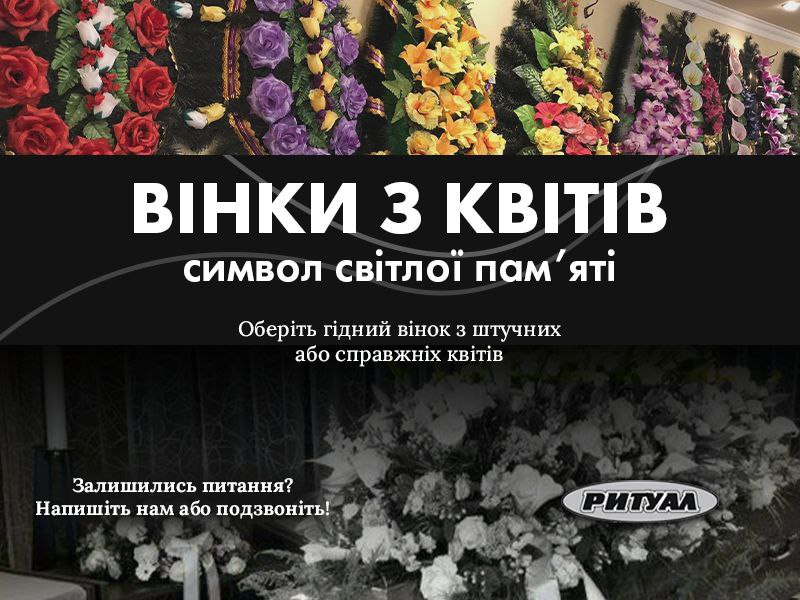

Вінки з справжніх або штучних квітів.
Такі аксесуари, як вінки з живими або штучними квітами, не є обов'язковим атрибутом поховання, але вони
стають символом довгої та світлої пам'яті про померлого. Придбати вінки з різними квітами можна в нашому
похоронному бюро “Ритуал”. В нас завжди є різноманітний вибір виробів, які виготовлені зі штучних квітів, а
також є можливість замовити вінок на свій смак з живими квітами. Якщо ви бажаєте, щоб вінки мали добрий
вигляд якомога довше, то краще обирати вироби зі штучних квітів, справжні прослугують менше, але
виглядатимуть більш презентабельно. В нашому похоронному бюро “Ритуал” працюють досвідчені консультанти, які
допоможуть вам обрати таку атрибутику гарної якості.